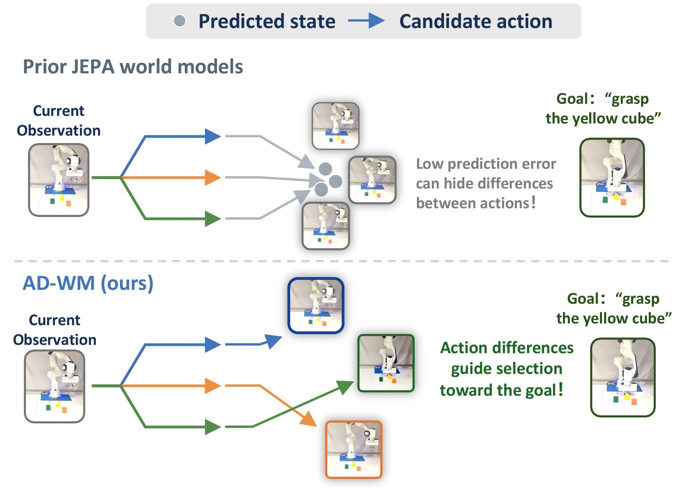
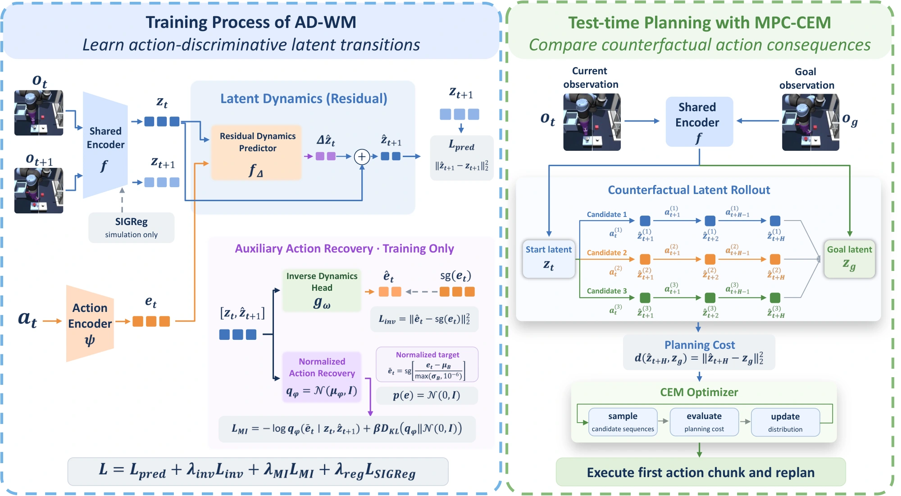
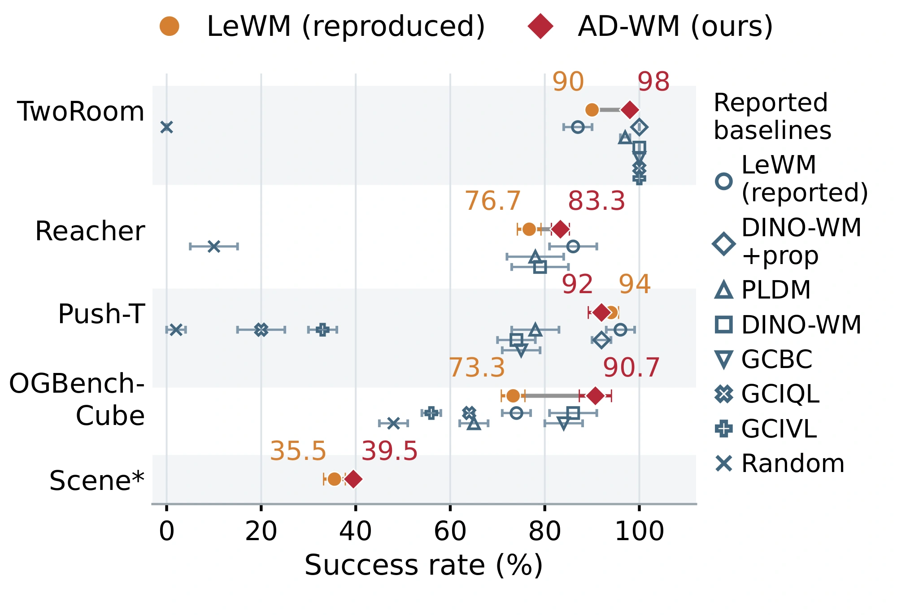
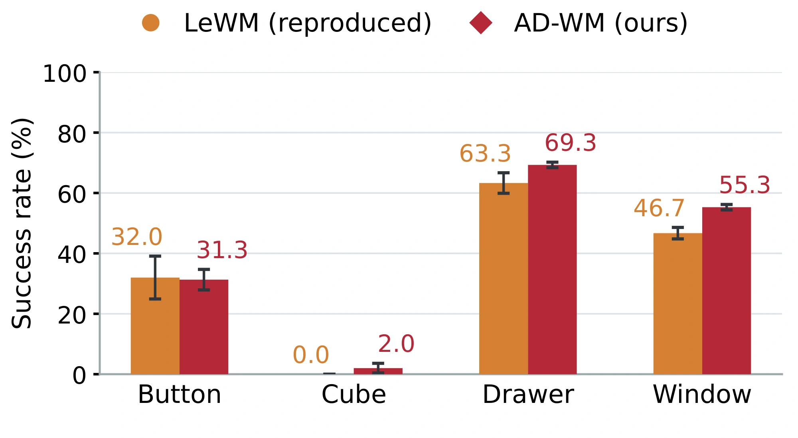
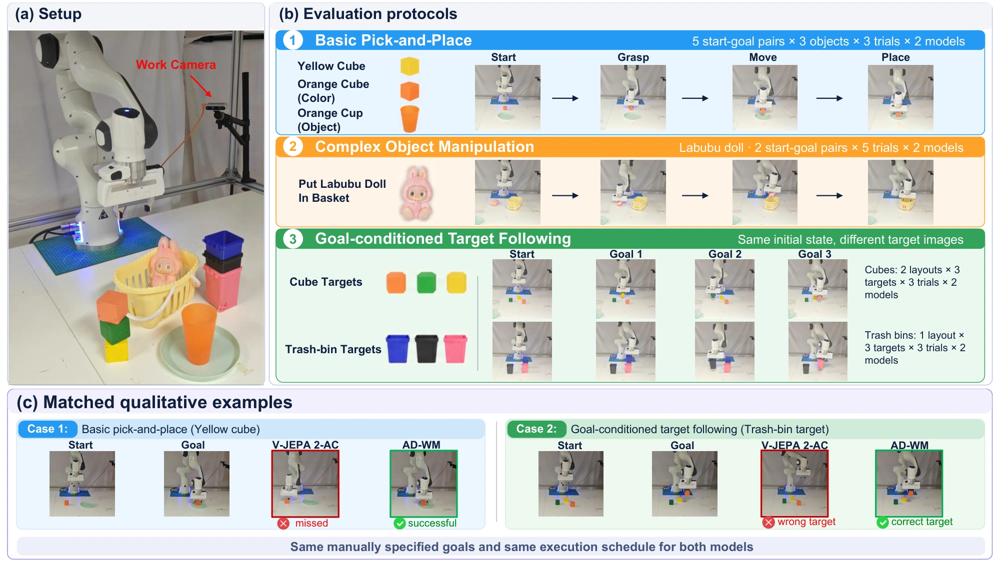
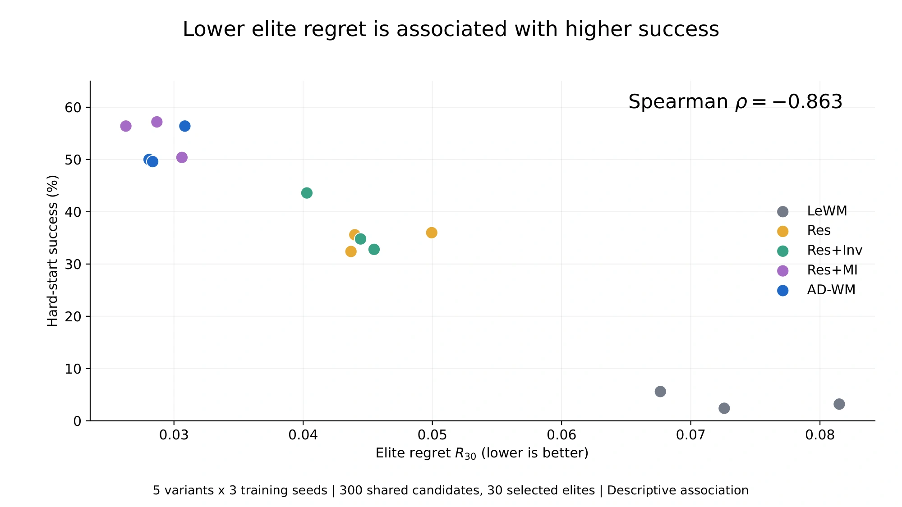

{kind=link}
Predict the change
The predictor estimates a latent increment and adds it to the current representation.
ẑt+1 = zt + Δẑt
AD-WM research project
AD-WM preserves action-dependent changes in latent predictions, helping a world model compare candidate actions and plan toward an image goal.
3.7 → 52.0%
Cube hard-start success
Matched LeWM → AD-WM42.2 → 71.1%
Franka pick-and-place success
Matched V-JEPA 2-AC → AD-WM4 / 5
Simulation environments improve
Mean success vs. reproduced LeWM01 / The problem
A recorded transition tells us what happened after one action. Planning asks a different question: which of several possible actions brings us closer to the goal?
When most visual content stays the same, a world model can achieve low prediction error while missing the small action-dependent changes that matter for control.

02 / The method
Residual latent prediction and two training objectives shape the transitions used by the planner.
The predictor estimates a latent increment and adds it to the current representation.
Inverse dynamics and normalized action recovery encourage the current and predicted next representations to retain action information.
Predictor-level supervisionCEM compares latent rollouts, executes the first action block, and replans. Auxiliary recovery heads are discarded at deployment.
Same MPC procedure
03 / Simulation results
Complete main simulation comparisons and controlled ablations from the paper. HS denotes average success across Cube hard-start protocols P00–P04.

Higher mean success than reproduced LeWM in four of five environments. PushT decreases from 94% to 92%. Reported literature baselines are shown separately; the improvement claim concerns the matched reproduction.

Drawer: 63.3% → 69.3%; Window: 46.7% → 55.3%, each improving in all three matched seed comparisons. Button is similar and Cube remains difficult. The overall paired seed test is unresolved (p = 0.13).
Cross-environment plots retain the paper’s error bars: source SDs for overall results, population SDs for Scene subtasks. Scene uses 200 balanced hard-start episodes per checkpoint, 50 per subtask; other environments use original protocols.
| Method | Inference | Original | P00 | P01 | P02 | P03 | P04 |
|---|---|---|---|---|---|---|---|
| LeWM | CEM | 73.3 ± 2.5 | 8.0 ± 2.8 | 4.7 ± 0.9 | 4.7 ± 1.9 | 1.3 ± 1.9 | 0.0 ± 0.0 |
| Fast-LeWM | CEM | 80.0 | 24.0 | 20.0 | 10.0 | 2.0 | 0.0 |
| Sub-JEPA | CEM | 78.0 | 34.0 | 20.0 | 10.0 | 10.0 | 10.0 |
| INTACT | Pure CEM | 74.7 ± 0.9 | 20.0 ± 3.3 | 21.3 ± 9.3 | 13.3 ± 2.5 | 6.7 ± 1.9 | 3.3 ± 2.5 |
| INTACT | Actor-CEM | 94.7 ± 2.5 | 78.7 ± 3.4 | 72.0 ± 5.7 | 56.0 ± 4.3 | 33.3 ± 12.4 | 10.7 ± 2.5 |
| INTACT | Direct | 98.7 ± 1.9 | 99.3 ± 0.9 | 99.3 ± 0.9 | 88.7 ± 1.9 | 35.3 ± 3.4 | 10.0 ± 0.0 |
| AD-WM | CEM | 90.7 ± 3.4 | 74.0 ± 2.8 | 68.0 ± 4.3 | 56.0 ± 1.6 | 36.7 ± 5.2 | 25.3 ± 3.4 |
50 matched episodes per protocol per checkpoint. Mean ± population SD over three checkpoints, except Fast-LeWM and Sub-JEPA (one checkpoint each). External methods retain native training and inference. Bold marks the highest displayed mean.
P00 begins on the tabletop without gripper contact; it already differs from Original despite zero perturbation. P00–P04 add cube xy perturbations of 0–4 cm, with clipping to the workspace.
Hard-start success rises from 3.7 ± 1.4% to 52.0 ± 3.1% for matched LeWM → AD-WM. P00–P01 are near-distribution controls; P02–P04 probe configuration tails within empirical cube xy support.
| Protocol | Joint coordinates | Relative coordinates |
|---|---|---|
| P02 · 2 cm | 2.0 | 52.7 |
| P03 · 3 cm | 38.7 | 80.7 |
| P04 · 4 cm | 72.0 | 95.3 |
Nearest-neighbor distances to training states from other episodes. Joint coordinates combine cube xy and end-effector xyz; relative coordinates use end-effector-minus-cube xyz. Thresholds use 20,000 tabletop/non-contact reference states per seed.
Controlled ablations
Matched images, encoder size, training budget, and MPC settings; three training seeds. Inv = inverse dynamics; MI = normalized action recovery motivated by conditional mutual information.
| Variant | Original ↑ | Hard starts ↑ |
|---|---|---|
| LeWM | 73.3 ± 2.5 | 3.7 ± 1.4 |
| Abs. + Inv + MI | 83.3 ± 0.9 | 14.4 ± 2.9 |
| Res | 82.7 ± 2.5 | 34.7 ± 1.6 |
| Res + Inv | 83.3 ± 1.9 | 37.1 ± 4.7 |
| Res + MI | 89.3 ± 3.8 | 54.7 ± 3.0 |
| AD-WM | 90.7 ± 3.4 | 52.0 ± 3.1 |
Res denotes residual prediction. Res + MI reaches higher mean HS than the default combination; adding Inv at its default weight does not improve this mean. Means ± population SD.
| Inv input | No MI | MI = 0.01 |
|---|---|---|
| Predicted endpoints | 37.1 ± 4.7 | 52.0 ± 3.1 |
| Encoded endpoints | 45.1 ± 4.4 | 60.7 ± 0.4 |
| Predicted increment | 39.9 ± 2.1 | 60.3 ± 3.7 |
Inv weight = 0.1. MI always receives predicted endpoints. Changing Inv inputs tests Inv-input robustness, not MI-input robustness. Means ± population SD.
Post-hoc sensitivity
All tested nonzero MI weights improve HS over no MI. The pre-specified default remains MI = 0.01 and Inv = 0.1; post-hoc peaks do not replace the headline model.
| MI weight | Original ↑ | Hard starts ↑ |
|---|---|---|
| 0 | 83.3 | 37.1 |
| 0.005 | 89.3 | 50.9 |
| 0.01 · default | 90.7 | 52.0 |
| 0.015 | 90.7 | 60.4 |
| 0.03 | 91.3 | 65.2 |
| 0.05 | 88.0 | 61.5 |
Means over three seeds. Nonzero MI weights yield 50.9–65.2% HS, compared with 37.1% without MI.
| Inv weight | Original ↑ | Hard starts ↑ |
|---|---|---|
| 0 | 89.3 | 54.7 |
| 0.05 | 90.0 | 57.2 |
| 0.10 · default | 90.7 | 52.0 |
| 0.20 | 92.0 | 57.5 |
Means over three seeds. Inv has a smaller, weight-dependent effect: weights 0.05 and 0.20 exceed the no-Inv mean; default 0.10 does not.
04 / Simulation demos
24 selected rollouts: Cube across Original and P00–P04, all four Scene subtasks, Reacher, TwoRoom, and PushT.
Paired clips show selected LeWM failures and AD-WM successes from matched starts; solo clips show selected AD-WM successes. These are qualitative examples, not an estimate of success rates. Playback omits planning waits. Scene clips come from supplementary recordings and do not replace the paper’s three-seed aggregate.
Cube · P00 · paired comparison
Cube · P04 · paired comparison
Scene · Balanced · paired comparison
Scene · Balanced · paired comparison
Reacher · Original · selected AD-WM success
Tworoom · Original · selected AD-WM success
Pusht · Original · selected AD-WM success · aggregate 94% → 92%
Cube · P02 · paired comparison
Cube · P03 · paired comparison
Scene · Balanced · paired comparison
Scene · Balanced · paired comparison
Reacher · Original · paired comparison
Cube · P01 · selected AD-WM success
Cube · Original · selected AD-WM success
Cube · P00 · selected AD-WM success
Scene · Balanced · selected AD-WM success
Scene · Balanced · paired comparison
Reacher · Original · paired comparison
Reacher · Original · selected AD-WM success
Tworoom · Original · paired comparison
Tworoom · Original · selected AD-WM success
Tworoom · Original · selected AD-WM success
Pusht · Original · paired comparison · aggregate 94% → 92%
Pusht · Original · selected AD-WM success · aggregate 94% → 92%
05 / Real-robot results & demos
Basic pick-and-place, complex-object manipulation, and image-goal target selection. Explore 41 supplied clips, including four explicitly labeled failure examples.
Real-world transfer
A frozen V-JEPA 2 encoder and matched DROID post-training, without laboratory-specific adaptation.
19/45 → 32/45Basic pick-and-place successes

| Evaluation | V-JEPA 2-AC | AD-WM |
|---|---|---|
| Basic pick-and-place | 19 / 45 | 32 / 45 |
| Complex-object success | 2 / 10 | 5 / 10 |
| Specified target moved | 14 / 27 | 21 / 27 |
| Specified-target lift-and-place | 9 / 27 | 17 / 27 |
Evaluation uses manually supplied grasp, move, and place image goals with a structured execution pipeline. Trials use separate, non-randomized model blocks; smaller protocols have limited precision.
Browse yellow cubes, orange cubes, orange cups, Labubu, and target selection across multiple layouts and recordings.
These supplied clips are qualitative examples, not the complete evaluation set or a new success-rate estimate. Source editing and playback timing are preserved; clip duration should not be interpreted as real-time planning latency. The robot uses manually supplied grasp, move, and place image goals. Failure clips are labeled by model and shown individually; they are not presented as synchronized matched trials.
AD-WM · clip 01
AD-WM · clip 01
AD-WM · clip 01
AD-WM · clip 01
AD-WM · clip 02
AD-WM · clip 01
AD-WM · clip 02
AD-WM · clip 03
AD-WM · clip 01
AD-WM · clip 02
AD-WM · clip 03
AD-WM · clip 04
AD-WM · clip 05
AD-WM · clip 06
AD-WM · clip 07
AD-WM · clip 08
AD-WM · clip 09
AD-WM · clip 10
AD-WM · clip 02
AD-WM · clip 03
AD-WM · clip 04
AD-WM · clip 05
AD-WM · clip 06
AD-WM · clip 07
AD-WM · clip 08
AD-WM · clip 09
AD-WM · clip 04
AD-WM · clip 05
AD-WM · clip 06
AD-WM · clip 07
AD-WM · clip 08
AD-WM · clip 02
AD-WM · clip 02
AD-WM · clip 03
AD-WM · clip 04
AD-WM · clip 05
AD-WM · clip 06
V-JEPA 2-AC · clip 01
AD-WM · clip 01
V-JEPA 2-AC · clip 01
V-JEPA 2-AC · clip 02
06 / Understanding the planner
CEM uses a small elite set to guide its search. The quality of these candidates matters for what happens next.
| Variant | One-step MSE ↓ | Local MSE ↓ | CAD ↑ | Best-elite regret ↓ | Elite-mean regret ↓ | HS (%) ↑ |
|---|---|---|---|---|---|---|
| LeWM | 2.72 ± 0.06 | 10.36 ± 0.48 | 0.460 ± 0.010 | 0.074 ± 0.006 | 0.298 ± 0.010 | 3.7 ± 1.4 |
| Res | 3.61 ± 0.20 | 11.17 ± 0.61 | 0.469 ± 0.005 | 0.046 ± 0.003 | 0.250 ± 0.009 | 34.7 ± 1.6 |
| Res + Inv | 3.43 ± 0.11 | 11.00 ± 0.28 | 0.470 ± 0.005 | 0.043 ± 0.002 | 0.245 ± 0.005 | 37.1 ± 4.7 |
| Res + MI | 4.20 ± 0.06 | 15.17 ± 0.04 | 0.454 ± 0.002 | 0.029 ± 0.002 | 0.228 ± 0.002 | 54.7 ± 3.0 |
| AD-WM | 4.27 ± 0.10 | 15.77 ± 0.20 | 0.448 ± 0.011 | 0.029 ± 0.001 | 0.229 ± 0.005 | 52.0 ± 3.1 |
MSE values are multiplied by 1,000; local MSE averages five rollout steps. CAD is whole-bank Spearman correlation. Both regrets use 30 elites from 300 shared candidates. Representation and scale affect latent MSE; absolute errors are not representation-independent physical metrics.
A paired hierarchical bootstrap over seeds and cases gives best-in-elite regret reductions of 0.028 [0.014, 0.043] for LeWM → Res, 0.002 [−0.003, 0.009] for Res → Res + Inv, and 0.014 [0.009, 0.023] for Res + Inv → AD-WM (95% CIs). The Inv-only increment remains unresolved.
From LeWM to Res, latent-increment MSE falls from 0.0067 to 0.0055, and the fraction of consecutive predicted increments with negative cosine similarity falls from 0.242 to 0.146. From LeWM to AD-WM, CEM center-to-grid-minimum distance falls from 0.827 to 0.130 and mean elite spread from 0.448 to 0.082. These model-specific slices are consistent with more stable updates and concentrated search; they do not establish proximity to a shared physical optimum.
Best-in-elite regret measures how much worse the best realized candidate retained by the model is than the best candidate in the entire bank, normalized by the realized cost range.
Across five variants and three training seeds, lower regret is associated with higher Cube hard-start success: Spearman ρ = −0.863.
300 shared candidates, 30 elites. Realized outcomes are used for diagnostics only. This is a descriptive association on fixed banks; costs use each model’s own encoder.
View the diagnostic PDF ↗
One selected qualitative diagnostic compares both models on the same physical action grid, then executes each model’s predicted minimum.
Selected case 48; a 31 × 31 shared grid adds up to ±2 cm of x/y command offset per step to the first five steps of a common reference sequence, with action clipping. Model cost scales are separate; the reported physical error uses the same cube-to-goal distance. This selected example is not a new aggregate success estimate and does not establish a global optimum.
Takeaway
Action-discriminative training improves the latent dynamics used for counterfactual MPC, with no additional modules at test time.
Read the full paper ↗{kind=link}